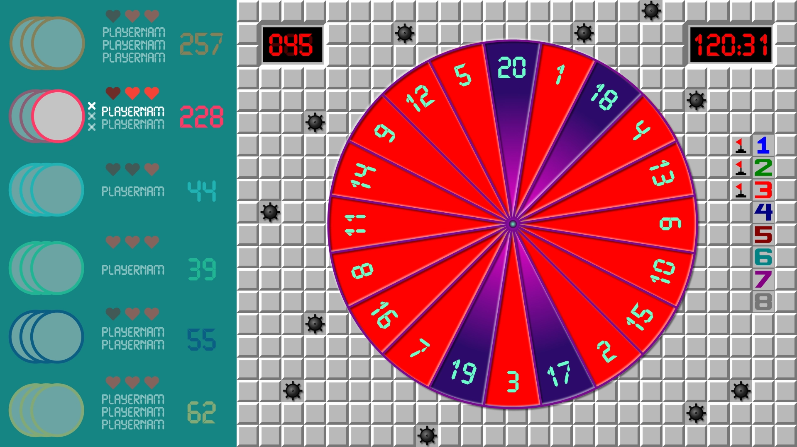
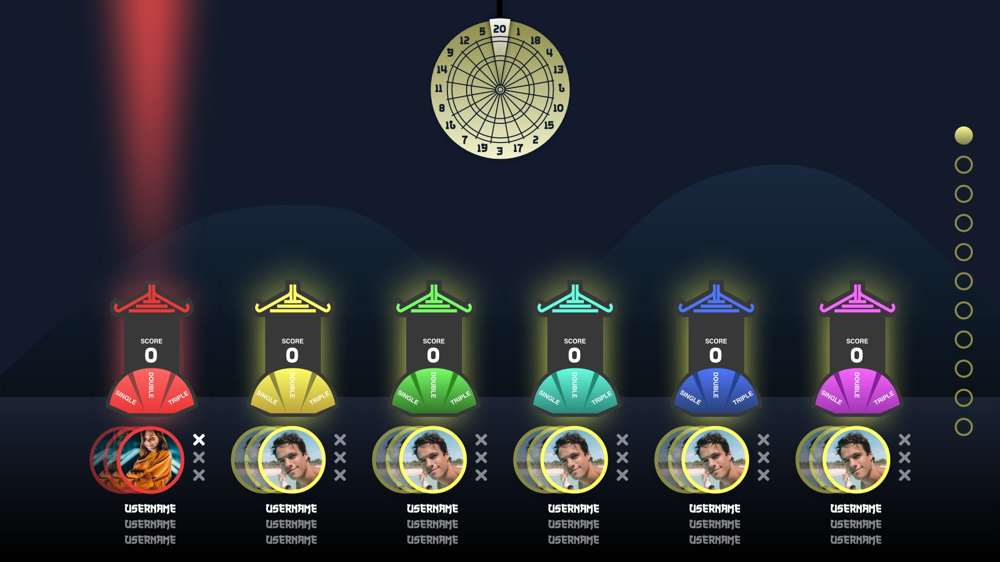

Dart Regler
Her finder du vores 5 forskellige spil, som vi selv har designet og programmeret.
Vi håber, I synes, de er lige så sjove, som vi gør! Spilene stiger i sværhedsgrad, så det første spil, "Chug It", er det nemmeste, og "Shanghai" er det sværeste. Er du klar til at tage udfordringen op? Lad spillet begynde, og se, om du kan ramme bullseye! 🎯
Vi håber, I synes, de er lige så sjove, som vi gør! Spilene stiger i sværhedsgrad, så det første spil, "Chug It", er det nemmeste, og "Shanghai" er det sværeste. Er du klar til at tage udfordringen op? Lad spillet begynde, og se, om du kan ramme bullseye! 🎯
CHUG IT

Drik din øl på en sjov og konkurrencedygtig måde, mens du sigter efter at komme præcist ned på 0 point.
- Hver spiller starter med 185 point.
- Sigt efter dartbrættet og tag en slurk af din øl.
- tørrelsen af slurken afhænger af, hvor mange point du scorer.
- Den første spiller, der når præcis 0 point, vinder spillet.
- Hvis du går under 0 eller ikke rammer præcis 0, "mislykkes" du og mister point i den runde.
DONK

Undgå at blive "DONK" ved at overgå eller udligne den forrige spillers score. Vinderen er den sidste, der ikke bliver "DONK".
- Spillet er en islandsk version af den klassiske G-R-I-S og spilles ved at score højere end den forrige spiller.
- Du skal altid udligne eller overgå den forrige spillers score.
- Hvis du ikke gør det, får du ét bogstav (D, O, N eller K).
- Hvis du får alle fire bogstaver, bliver du "DONK" og ryger ud af spillet.
- Vinderen er den sidste spiller, der ikke har fået "DONK".
Killer

Målet med spillet er at eliminere dine modstandere ved at ramme deres felter, samtidig med at du beskytter dit eget felt.
- Hvert hold eller spiller får tildelt et felt på brættet.
- Du skal ramme dit felt tre gange for at blive en "Killer".
- Når du har opnået status som "killer", skal du forsøge at ramme modstandernes felter for at eliminere dem.
- Den sidste spiller eller hold, der står tilbage, vinder spillet.
MINE-SWEEPER

Målet er at samle så mange point som muligt, inden spillet slutter.
- Hver spiller starter med tre liv.
- Dartskiven fungerer som en almindelig dartskive, men med bombefelter markeret med rødt på skærmen.
- I hver runde tilføjes flere bombefelter.
- Hvis du rammer et bombefelt, får du nul point for kastet og mister ét liv.
- Vinderen er den spiller, der har flest point, når alle spillere er elimineret, eller efter 8 runder.
SHANGHAI

Hvor præcise er I på tværs af brættet?
- Shanghai består af 8 runder.
- Ram måltallet i hver runde for at samle point.
- Du samler så mange point, som måltallet er for hvert skud (dobbelt og tredobbelt tæller med).
- Vinderen er det hold eller den spiller, der har flest point efter alle runder
- Du kan også opnå et Shanghai ved at ramme et enkelt, dobbelt og tredobbelt af måltallet i samme runde og vinde med det samme.